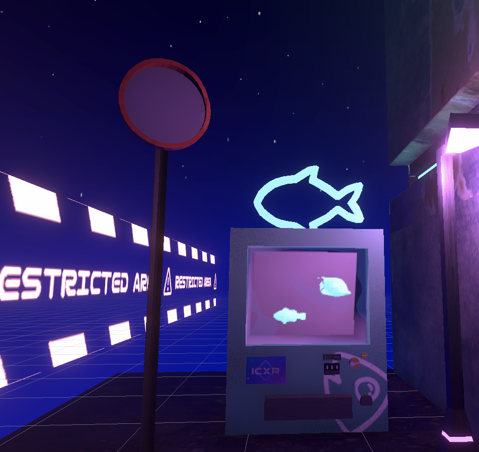
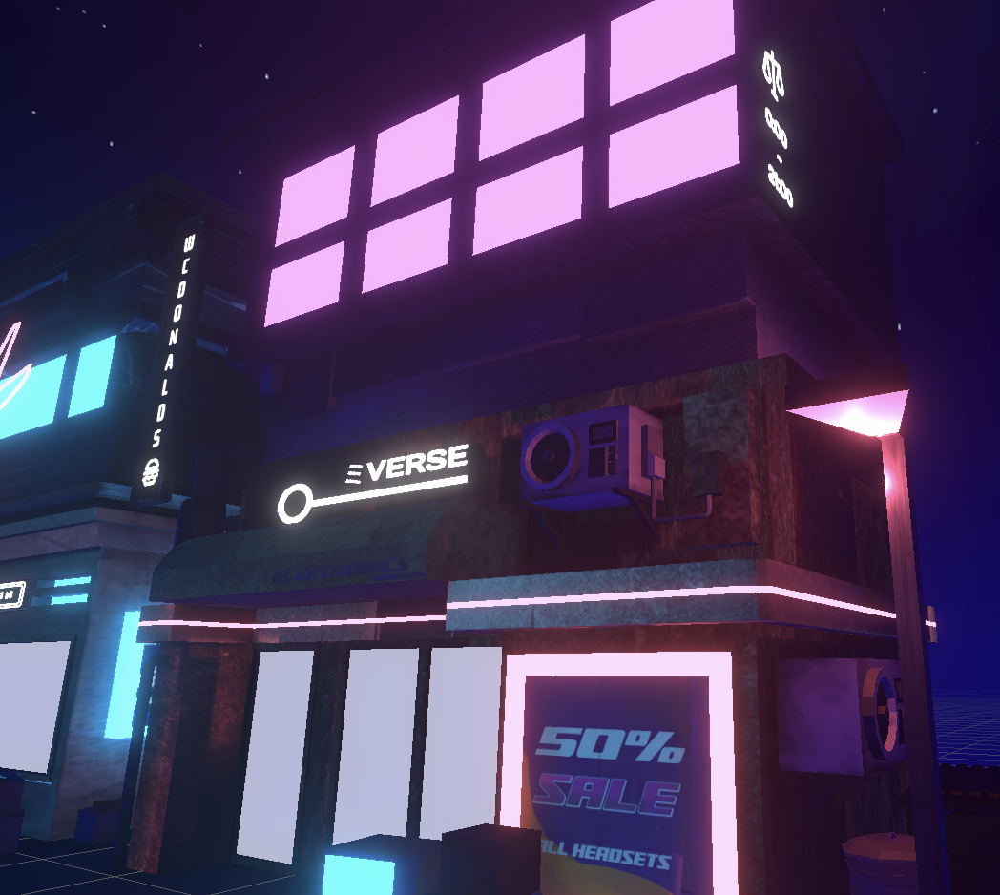
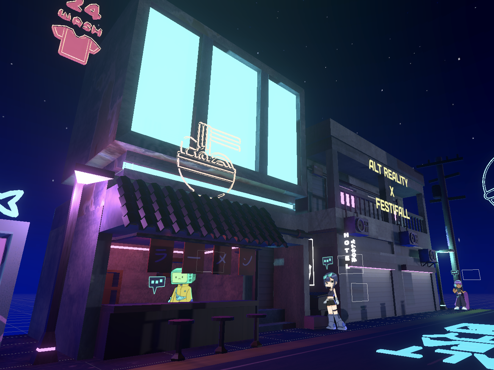
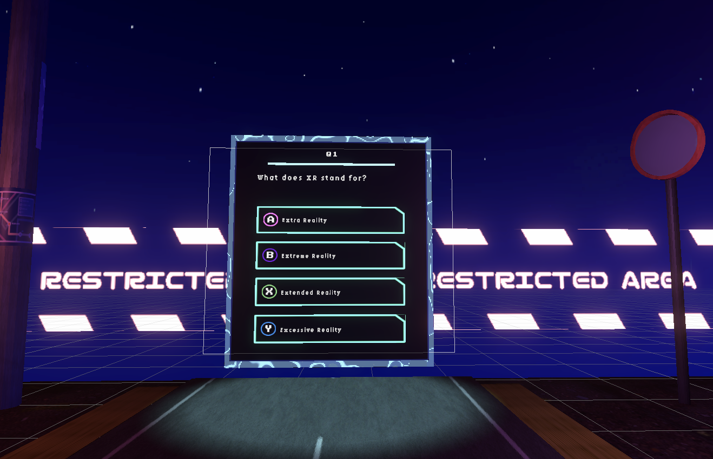
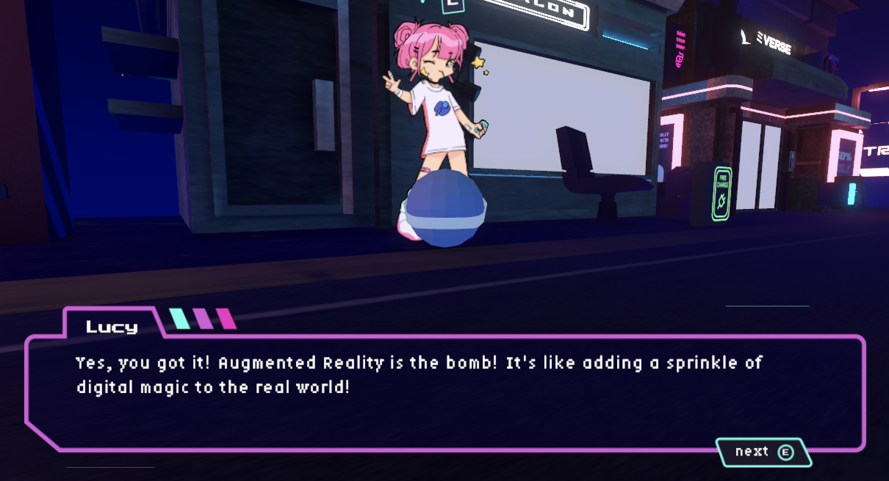
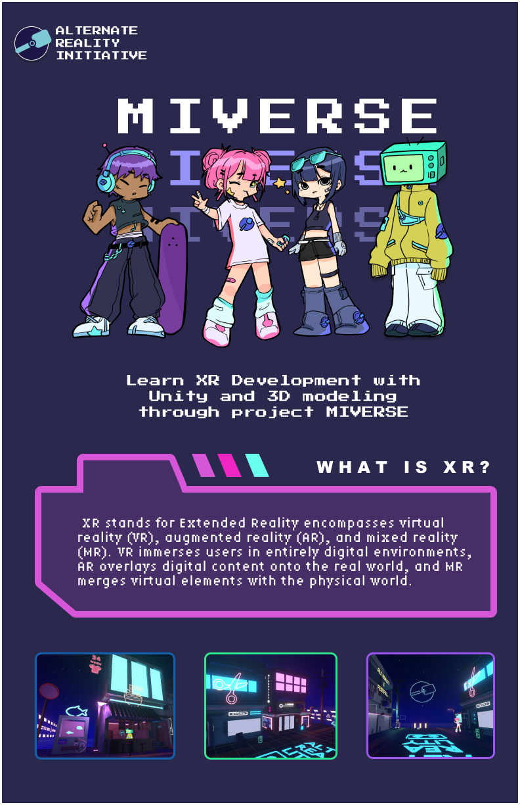

MIVERSE
OVERVIEW
The MIVERSE, a combination of “Michigan” and “universe”, is a 2.5D virtual world that exists in the digital realm, mixing themes of cyberpunk and tech. MIVERSE is also a homophone of MEVERSE (Me-Universe), which suggests the concept of portraying oneself within a virtual world. Currently, within the virtual world, users can freely navigate an alleyway, engage in conversations with NPCs (non-player characters) to enhance their understanding of extended reality (XR), and take a quiz to gauge their VR knowledge. At its core, Project MIVERSE acts as the foundational base for my club’s XR workshop series that I’ve created to teach new members the skills of Unity and Blender, enabling them to be well-rounded XR developers.
MY ROLE
This project was a collaborative partnership where we collectively conceptualized, and created 2D art, 3D models, as well as coded interactions. In particular, I worked on:
- Manipulating white pixels to transparent once in designed folder path
- Porting all PC controls to VR(movement + interaction)
- Creating a VR quiz based on NPC dialogue content
- Designing NPC UI + Dialogue Box
- All 3D model texturing
DEVELOPMENT STACK
This project was created in Unity game engine as well as Unity VR. All assets were handmade in either Figma, Blender, or Procreate.
DETAILS
The PC version serves as a demo version to be played at places that VR headsets aren’t convenient for. Its purpose is to be an interactive exhibit to catch the attention of non-members. Based on the aquarium interactive exhibit where kids color in fish, and then scan it in and see the fish come to life on a virtual screen, students who stop by the ARI booth can create their own graffiti design with markers and outline it in a thick black outline. Then ARI would take a picture and upload it into a designed folder where then Unity would read it in and remove the white background converting it into a transparent PNG. Now the student can choose a wall to graffiti by clicking ‘e’ and see their graffiti appear in a virtual world. If they want to further explore, students can move around the virtual world and chat with NPCs to learn about XR technology.
In the VR version, the previous graffiti drawn by different students will load automatically to the wall and users can teleport around and explore the environment. Like the PC version, they can also interact with the NPC’s and learn more about XR technology. At the end, they can also take a VR quiz based on the knowledge they gained from reading the NPCs dialogues.
In-project images:
    MARKETING PERSPECTIVE
Through my advertising efforts, ARI(UofM's XR club) achieved remarkable results—our club witnessed an astounding 150% increase in membership compared to the previous year. Additionally, we experienced a notable upswing in member retention rates. These outcomes underscore not only showing my discerning eye but also my ability to contribute to the growth and success of the XR community.
ARI advertisement flyer:
WORKSHOP PERSPECTIVE
MIVERSE's main idea is to teach new/existing members foundational Unity and Blender skills which helps prepare them for future XR development. Although this is a VR project, the skills learned can be used across all types of XR development. Members will then have the creative freedom to bring their own ideas to life in XR. For example, students can learn to create cyberpunk buildings through 3D modeling and texturing, while also learning how to implement spatial sound through Unity. They can also create HCI interactions or use C# to design in-city minigames.
- Intro to Unity
- Link:
- Content including: How to Git, Unity workspace introduction, Player movement script, Materials + Emissions
- Intro to Unity VR
- Link:
- Content including: Prefabs, Good VR development practices, Petting virtual cat, Haptic sensory feedback, Colliders + Boundaries
- Intro to Blender
- Link:
- Content including: Blender workspace introduction, 3D modeling cyberpunk building, Modifiers
- Blender Intermediate
- Link:
- Content including: Finding textures, UV unwrapping, Handpainting Textures, Material + Emissions
- Figma How To
- Link:
- Content including: Figma workspace introduction, Frame + Plugins, Cyberpunk building sign design
(Links are currently being updated as we hold our workshop meetings)